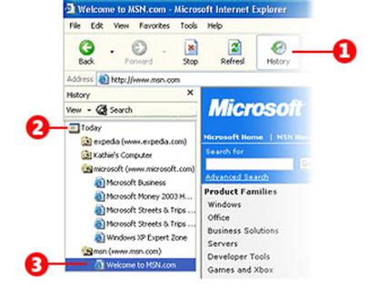
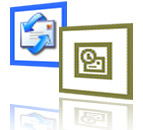

STAM 102 :: Lecture 16 :: Web Browsing and Electronic Mail

Web browsing
- Browse means reading superficially or at random.
- Reading information contained in the WebPages on the Internet using browsers is called web browsing.
- A web browser is a software application for retrieving, presenting, and traversing information resources on the World Wide Web.
Understand the browsers
- In the address bar of the browser enter the address of the website or enter the address of the any search engine.
- If the address entered is a website then the corresponding webpage will get displayed.
- If the address entered is of a search engine (For example Google) then the webpage of the corresponding search engine will get displayed as shown below:
- In the search tab enter the information about your search. For example if you want to browse about computers enter the computers in the search tab.
- Then click Search tab.
- A set of pages with the links to the webpages which contain information about computer as shown below:
- Clicking the links desired by you will be taking you to those webpages.
Return to a Web Page That You Just Visited
• |
To return to the last page you visited, click the Back button on the browser toolbar. |
• |
Click the Forward button to retrace your steps and return to pages you visited before you clicked the Back button. |
• |
To see one of the last nine pages you visited in this session, click the tiny black arrow to the right of the Back or Forward button, and then click the page you want from the list. |
Find a Web Page That You Visited Today or a Few Weeks Ago
The browsers automatically records Web pages you've visited both today and in the past. It organizes them in folders on the History bar by the day you visited. Within each day, it organizes the Web sites alphabetically in folders, putting each page visited on that site in that folder. Here's how to find pages in the History list:
1. |
On the Internet Explorer 6 toolbar, click the History button. |
2. |
In the History bar, click the time period you want to search. For example, you may want to see all the sites you visited today. (Marked (2) as in the figure shown in Step 4.) |
3. |
Click the Web site folder to open the list of pages, and then click the link to the page to display the Web page itself. (Marked (3) as in the figure shown in Step 4.) |
4. |
 |
5. |
When you've finished using the History bar, click the Close button. |
Electronic Mail
- Electronic mail, most commonly abbreviated email or e-mail, is a method of exchanging digital messages.
- E-mail systems are based on a store-and-forward model in which e-mail server computer systems accept, forward, deliver and store messages on behalf of users, who only need to connect to the e-mail infrastructure, typically an e-mail server.

Creating Email
The users can have email account in any one of the email services such as gmail, yahoomail, rediffmail etc.
To create an email account in any one these email services the user need to enter the address of the service in the browser first.
The service will prompt the user to know whether a new user or not.
If you are a new user then the service will guide step by step to create your own email id.
Email Addresses
Email addresses are made up of at least two parts. One part is the name of a mail domain that will ultimately translate to either the recipient's host or some host that accepts mail on behalf of the recipient. The other part is some form of unique user identification. Most e-mail addresses are set up like this: it is your username, then an @ ('at') symbol, and then a domain name (something .com, .net, or .org in most cases).
Using Email
Using e-mail is rather straightforward. Once you have an account set up, select the option that says something like "new e-mail message" or "create a new message". The service will prompt with three boxes (called fields):
- To:
- Subject:
- Body
- Attachment
To field: In the To field type the complete e-mail address of the person who will receive the e-mail.
Subject and Body fields: Type anything you want in the subject and body fields, but remember the length of the subject is limited.
Attachments: Click the Attach a file or Attachment link to add files to the message.
Sending the message
Once filling all the required fields and attaching files to the message click Send button to send the message.
You can forward (make a copy) of a message you receive from someone (if you have their permission if necessary) and mail it to someone else with the forward option.
CC and BCC
CC stands for carbon copy. If you want to send a message to multiple people, add the extra people in the CC: field (usually you separate their e-mail addresses by commas).
BCC stands for blind carbon copy. BCC works just like a carbon copy, except the e-mail addresses you type in BCC do not show up to the other recipients. (Example: You send a message To: Mary and BCC: Joey. Joey will see Mary's e-mail address, but Mary won't see Joey's e-mail address because you "blinded" it by putting it in the BCC field.)
CAUTION: You can also get viruses by downloading executable files (usually .com and .exe on Windows computers) from web sites. Don't download or run executable files from web sites you don't trust.
| Download this lecture as PDF here |